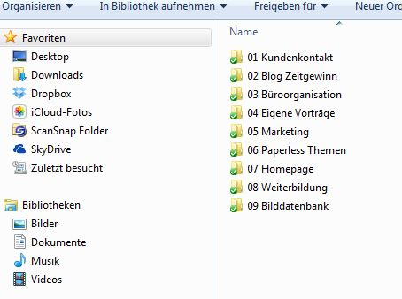

Jahresende – Aufräumzeit
Mitarbeiter verschiedener Unternehmen waren letztes Jahr begeistert von unserer gemeinsamen Aufräumaktion und wünschen sich eine Wiederholung. Sie waren erstaunt, wie viel Ballast sie in kurzer Zeit abwerfen konnten und gingen regelrecht befreit ins neue Jahr. Schenken Sie Ihren Mitarbeiterinnen und Mitarbeitern Aufräumzeit mit meiner Unterstützung als Professional Organizer – 1 Tag genügt vollkommen!
Gleichzeitig unterstützen Sie damit meine Aktion „Zeitgeschenk von Zeitgewinn“!
Der Herbst, trotz sonniger Tage und milden Temperaturen, ist in vollem Gange. Die verfärbten Blätter fallen und schon steht die Adventszeit vor der Tür. Diese führt uns nicht nur im Kerzenschein Weihnachten entgegen, sondern steht auch – ganz unabhängig von der eigentlichen, christlichen Bedeutung – für Besinnung. Bevor wir in das neue Jahr starten ist Zeit, zu reflektieren, Ballast abzuwerfen, aufzuräumen, Platz für Neues zu schaffen…
Meine bisherigen Erfahrungen bestätigen, dass dieser Zeitpunkt des Jahres besonders gut für umfangreiches Aufräumen und Loslassen geeignet ist. Der November und Dezember, beziehungsweise die Adventszeit, ist für viele Mitarbeiter(innen) so etwas wie ein „Hinfiebern auf das Jahresende und einen Neuanfang“, meist mit guten Vorsätzen.
Kaum hat der Januar begonnen, sind wir schon wieder ein Stück unterwegs im neuen Jahr. Die Weihnachtspause liegt hinter uns, der Zauber des Jahresbeginns mit all seiner Energie, wenn es ihn denn gibt, verblasst allmählich, die ersten guten Vorsätze sind möglicherweise bereits gebrochen und allzu schnell segeln wir wieder im alten Fahrwasser. Der bekannte „Zeitdruck“ schleicht sich ebenfalls wieder ein. Viele haben das Gefühl, zu wenig Zeit zu haben für das, was eigentlich wichtig und gut wäre: im Beruf – für ein ruhiges Gespräch mit Kollegen oder Kunden etwa; aber auch im Miteinander von beruflichem und privatem Leben.
Viele Menschen haben sich auch dieses Jahr wieder vorgenommen – und das nicht zum ersten Mal – sich geordnet und mit leerem Schreibtisch in die Weihnachtsferien zu verabschieden, um mit freiem Schreibtisch und freiem Kopf ins neue Jahr zu starten.
Wäre es nicht schön, das dieses Jahr endlich einmal umzusetzen? Wäre es nicht befreiend, in den Wochen vor Weihnachten mal einen Tag Ihren Schreibtisch und Ihren Computer aufzuräumen, „offiziell“ dafür Zeit zu bekommen?
Und haben Sie, liebe Chefs und Unternehmer, schon einmal darüber nachgedacht, Ihren Mitarbeitern einmal im Jahr Zeit einzuräumen? Ihren Arbeitsplatz, Desktop und das E-Mail-Postfach einer großen Aufräumaktion zu unterziehen? Jeder von uns weiß: Aufräumen setzt Energien frei, wirkt erleichternd und macht den Kopf frei. Im Unternehmen sparen aufgeräumte Arbeitsplätze, Desktops und Laufwerke auch noch jede Menge Zeit und Nerven im Büroalltag.
Und welche Zeit ist besser für eine Aufräumaktion geeignet, als das Jahresende? Meine Erfahrung in den letzten Jahren hat genau das bestätigt. Auch bei den größeren Kaizen-Aufräumaktionen, die dieses Jahr über das ganze Jahr verteilt stattgefunden haben, gaben die Teilnehmer – und zwar alle – das Feedback, sich so einen Tag mit offizieller Aufräumzeit jedes Jahr einmal und am besten vor Weihnachten zu wünschen.
Abgesehen davon, dass es ein gutes Gefühl ist, wieder einmal ein aufgeräumtes Arbeitsumfeld zu haben, wurden immer eine Menge Ideen gesammelt, wie man künftig Unordnung und damit Suchzeiten und Verschwendung vermeiden kann. Daneben ist immer Platz entstanden, auf den Tischen und Festplatten, in den Schränken und Köpfen.
Ich empfehle eine solche Aufräumaktion mit Unterstützung und im Team durchzuführen. Es ist hilfreich, wenn die Mitarbeiter eine Anleitung haben, worauf es beim Aufräumen ankommt, Entscheidungsunterstützung erfahren und immer wieder im Laufe des Tages ermunternd „bei der Stange gehalten“ werden. Denn aufräumen ist anstrengend.
Meine Idee: Die Unternehmensleitung stellt Aufräumzeit zur Verfügung, schenkt ihren Mitarbeiterinnen und Mitarbeitern diese quasi zusammen mit meiner Unterstützung als Professional Organizer – 1 Tag genügt vollkommen! Das Ergebnis wird Sie und Ihre Mitarbeiter begeistern!
Sie möchten mich „verschenken“? Dann rufen Sie mich gerne an unter +49 (0)176 103 358 62 oder schreiben mir eine E-Mail an: info@zeitgewinn-hamburg.de
Wenn Sie eine solche Aktion lieber in den Tagen zwischen Weihnachten und dem Jahreswechsel durchführen möchten, stehe ich Ihnen auch gern zur Verfügung.
Weitere Artikel
Ordnung auf dem Rechner – Teil 2
Nach meinen kurzen Tipps zum „Blitzaufräumen“ der Ordner- und Laufwerkstruktur in Teil 1, folgen hier meine Hinweise zum richtigen Umgang mit der Ablagefläche Desktop: 2. Desktop Ich habe dies bewusst oben „Ablagefläche“ genannt …

Ordnung auf dem Rechner Teil 1
Wir haben ja schon festgestellt, dass der Jahresanfang hervorragend geeignet ist, um im Büro klar Schiff zu machen. Sie erinnern sich? ;-). Im letzten Artikel Ordnung auf dem Schreibtisch, habe ich Ihnen einige Tipps an die Hand …